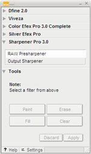
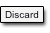
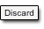

The Selective Tool offers a quick and easy way to access Nik Software Plug-ins. The Selective Tool will display the controls specific to the plug-ins installed and four selection tools that can be used to selectively apply the filter effects.
Dfine® 2.0, Viveza™, Color Efex Pro™ 3.0, Silver Efex Pro™,
and Sharpener Pro™ 3.0 are
all accessible from the Nik Selective Tool. Each plug-in installed has its own
collapsible area providing quick access to each plug-in while also allowing the
plug-ins not currently in use to be out of the way.
The Selective Tool can be used with pressure-sensitive tablets such as
the Wacom® pen tablet to apply the filter with pressure-sensitivity.
To access a specific filter’s help, please open the filter and then click the Help button at the bottom left corner of the interface.
Selection Tools
The Selective Tool contains four tools for applying the selected filter effects.
Paint
 Click
the Paint button to selectively paint the current filter’s effect
into the active image. You can control the degree to which the effect
is added to the image by varying the opacity of the brush.
Click
the Paint button to selectively paint the current filter’s effect
into the active image. You can control the degree to which the effect
is added to the image by varying the opacity of the brush.
Erase
 Click
the Erase button to selectively remove the current filter’s effect
from the active image. You can control the degree to which the effect
is removed from the image by varying the opacity of the brush.
Click
the Erase button to selectively remove the current filter’s effect
from the active image. You can control the degree to which the effect
is removed from the image by varying the opacity of the brush.
Fill
Click the Fill button to apply the filter’s effect to the entire image. This tool is especially useful if you want to apply the filter’s effect to all but a small area. Click Fill, then click Erase to remove the effect from the area to remain unaffected.
Clear
 Click
the Clear button to remove the filter’s effect from the entire
image. This is helpful if you made a mistake with the Paint tool and
want to start over.
Click
the Clear button to remove the filter’s effect from the entire
image. This is helpful if you made a mistake with the Paint tool and
want to start over.
Apply / Discard
 Click
Apply to apply the current filter’s effect to the image. Click
Discard to prevent the effect from being applied.
Click
Apply to apply the current filter’s effect to the image. Click
Discard to prevent the effect from being applied.
Note: The Selective Tool is available only with Adobe Photoshop and Adobe Photoshop Elements serving as host for Nik Software Plug-ins.
Note: The Selective Tool cannot be used when creating a Photoshop Action. In order to create a Photoshop Action, please select the desired filter from the Filters menu.
Click the Settings button at the bottom of the Selective Tool interface to specify how the Selective Tool interacts with Adobe Photoshop or Adobe Photoshop Elements and active images.
When Photoshop Launches
This option lets you specify whether the Selective Tool opens when Adobe Photoshop or Adobe Photoshop Elements is launched. Choose between:
Automatically Open the Selective Tool
Do Not Open the Selective Tool
Apply filter to:
Advanced users can specify how the Selective Tool applies filters, either to a composite of the visible layers or to only the active layer.
Image Composite
Select this option to create a new layer and perform a stamp-visible command into the new layer to ensure that the filter is applied to the entire image and not only to the active layer. (This is the default behavior in all Nik Software products.)
Active Layer
Select this option to duplicate the layer active when you selected the Nik Software filter, and apply the filter to that layer only.
After Clicking Apply
This option lets you specify whether the Selective Tool maintains filter effects as a separate layer or merges layers when you click Apply.
Merge the Filtered Effect to the Current Layer
This option merges the filtered image with your original image into one layer. Enabling this option helps keep file sizes to a minimum.
Apply the Filtered Effect to a Separate Layer
This option ensures that the filtered effect is limited to a separate layer. By enabling this setting and saving the active image in a layered file, you preserve original image information and can remove the filter’s effect at any time. Please keep in mind, however, that enabling this option may increase file sizes.